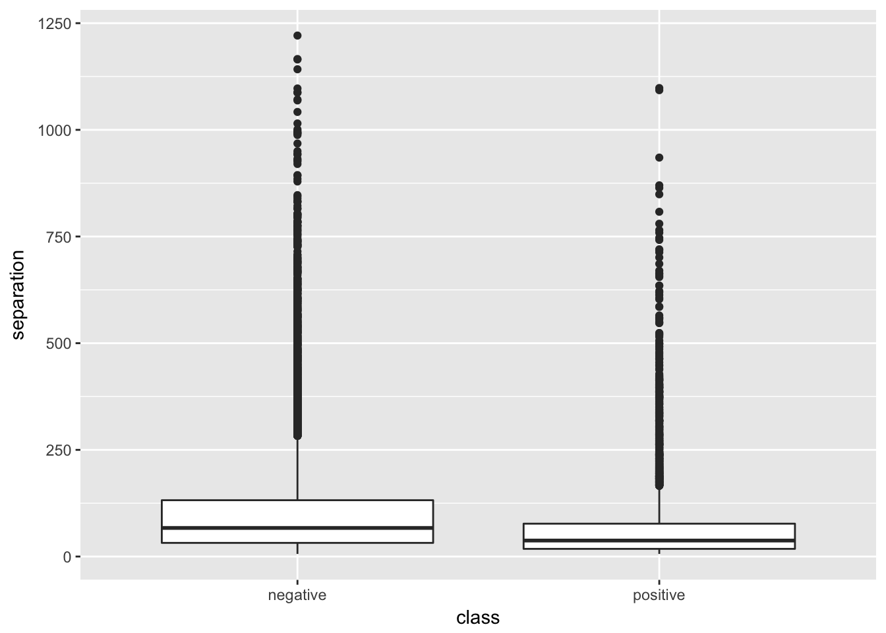
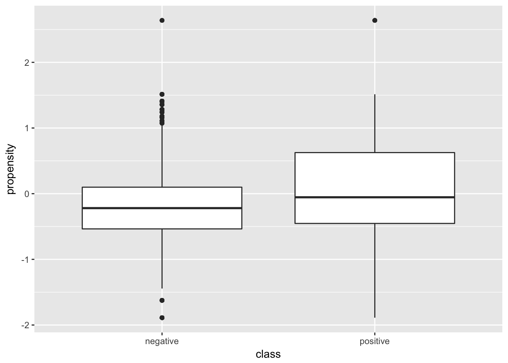
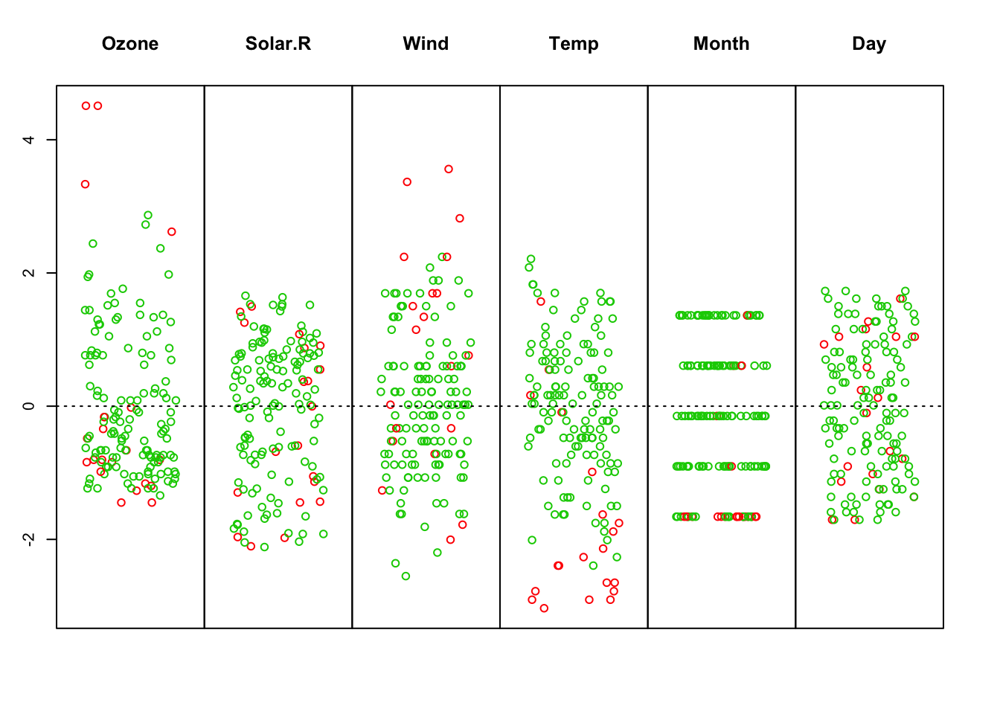

Cargamos la libreria outliers.
library(outliers)
library(ggplot2)Leemos los datos:
# se carga el archivo con las funcione de lectura de datos
source("lecturaDatos.R")
path <- "./data/"
file <- "datos.csv"
# lectura de los datos
datos <- lecturaDatos(path,file)Ahora detectamos las anomalias para algunas variables:
#detección de anomalias para las variable 1 a 3. Observad que no tiene sentido considerar variables de tipo discreto en este analisis. La función devuelve el valor (o valores) considerados anomalos para las variable de interes. Este método solo considera las desviaciones con respecto a los valores de cada variable (no relaciones con otras variables)
anomalos <- outlier(datos[,1:3])
print(anomalos)## separation propensity length
## 1221.000000 2.638864 1244.000000# la media de la variable separation es
mean(datos[,"separation"])## [1] 93.67455# se muestra la distribucion de separation en funcion del valor
# de la variable clase
ggplot(data = datos, aes(class, separation)) +
geom_boxplot()
# se podría hacer igual con la variable propensity
ggplot(data = datos, aes(class, propensity)) +
geom_boxplot()
Para el problema de los valores anómalos tambien tenemos el
require(mvoutlier)
# se usa el conjunto de datos de calidad del aire, en las
# mismas condiciones que vimos con anterioridad
datos <- airquality
# se determina el numero de instancias sin datos perdidos y con datos
# perdidos. A observar la comodidad de uso de las funciones ncc e nic
completos <- mice::ncc(datos)
incompletos <- mice::nic(datos)
cat("Datos completos: ",completos, " e incompletos: ",incompletos,"\n")## Datos completos: 111 e incompletos: 42# se imputan los datos
imputados <- mice::mice(datos)##
## iter imp variable
## 1 1 Ozone Solar.R
## 1 2 Ozone Solar.R
## 1 3 Ozone Solar.R
## 1 4 Ozone Solar.R
## 1 5 Ozone Solar.R
## 2 1 Ozone Solar.R
## 2 2 Ozone Solar.R
## 2 3 Ozone Solar.R
## 2 4 Ozone Solar.R
## 2 5 Ozone Solar.R
## 3 1 Ozone Solar.R
## 3 2 Ozone Solar.R
## 3 3 Ozone Solar.R
## 3 4 Ozone Solar.R
## 3 5 Ozone Solar.R
## 4 1 Ozone Solar.R
## 4 2 Ozone Solar.R
## 4 3 Ozone Solar.R
## 4 4 Ozone Solar.R
## 4 5 Ozone Solar.R
## 5 1 Ozone Solar.R
## 5 2 Ozone Solar.R
## 5 3 Ozone Solar.R
## 5 4 Ozone Solar.R
## 5 5 Ozone Solar.Rdatos <- mice::complete(imputados)
# se analizan los datos en busca de anomalias. El grafico
# resultante muestra en rojo los datos considerados considerados
# como anomalos
resultados <- mvoutlier::uni.plot(datos)
# a partir de resultado es posible conocer las instancias en que
# aparece algun dato anomalo. Esto podria usarse para filtrar las
# instancias y quedarnos con aquellas en que no haya anomalias (o
# bien aplicar alguna tecnica para modificar sus valores)
print(resultados$outliers)## [1] TRUE FALSE FALSE TRUE TRUE TRUE TRUE TRUE TRUE FALSE FALSE
## [12] FALSE FALSE FALSE TRUE FALSE FALSE TRUE FALSE TRUE TRUE FALSE
## [23] TRUE TRUE TRUE TRUE TRUE FALSE FALSE TRUE FALSE FALSE FALSE
## [34] TRUE FALSE FALSE FALSE FALSE FALSE FALSE FALSE FALSE FALSE FALSE
## [45] FALSE FALSE FALSE TRUE FALSE FALSE FALSE FALSE FALSE FALSE FALSE
## [56] FALSE FALSE FALSE FALSE FALSE FALSE TRUE FALSE FALSE FALSE FALSE
## [67] FALSE FALSE FALSE FALSE FALSE FALSE FALSE FALSE FALSE FALSE FALSE
## [78] FALSE FALSE FALSE FALSE FALSE FALSE FALSE FALSE FALSE FALSE FALSE
## [89] FALSE FALSE FALSE FALSE FALSE FALSE FALSE FALSE FALSE FALSE FALSE
## [100] FALSE FALSE TRUE FALSE FALSE FALSE FALSE FALSE FALSE FALSE FALSE
## [111] FALSE FALSE FALSE FALSE FALSE FALSE TRUE FALSE FALSE FALSE FALSE
## [122] FALSE FALSE FALSE FALSE FALSE FALSE FALSE FALSE FALSE FALSE FALSE
## [133] FALSE FALSE FALSE FALSE FALSE FALSE FALSE FALSE FALSE FALSE FALSE
## [144] FALSE FALSE FALSE FALSE TRUE FALSE FALSE FALSE FALSE FALSE# seleccion de instancias sin anomalias
datosFinales <- datos[!resultados$outliers, ]Todo lo representado con puntos verdes representa valores normales mientras que los puntos rojos representan valores anomalos. Pueden aparecer en el centro, y esto indicará que están asociados a otras instancias anómalas o que la combinacion de varias variables indican que es anómalo.